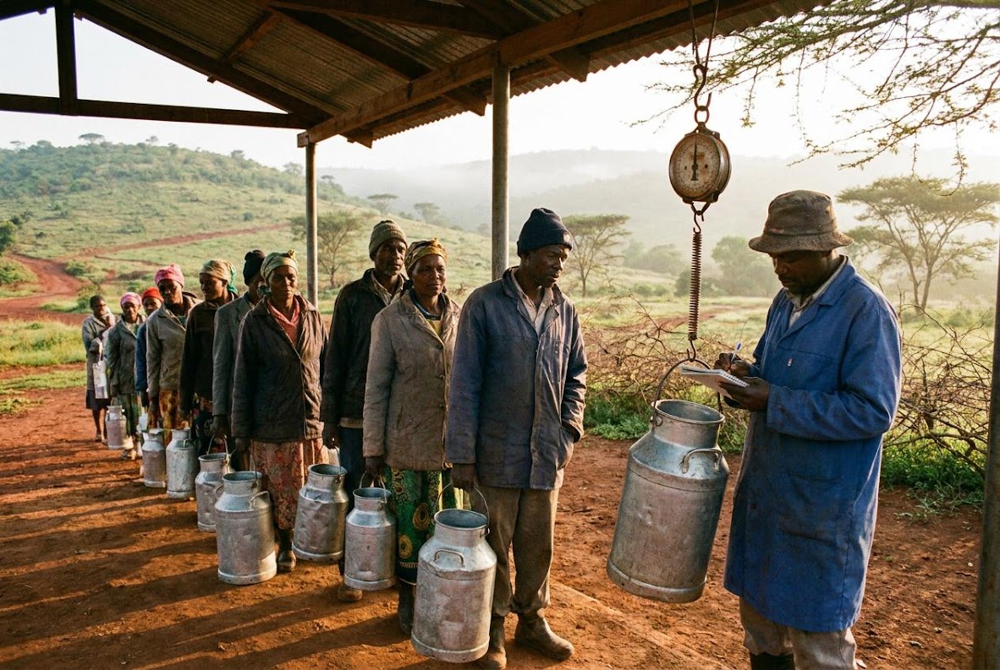

Milk collected twice a day, paid once a month
Ereteti Dairy Sacco has collected milk on the Ngong road since 1998.
Any farmer on one of our three routes may join.

Milk collected twice a day, on three routes out of Ngong.
Ereteti Dairy Sacco has collected milk on the Ngong road since 1998.
Any farmer on one of our three routes may join.
